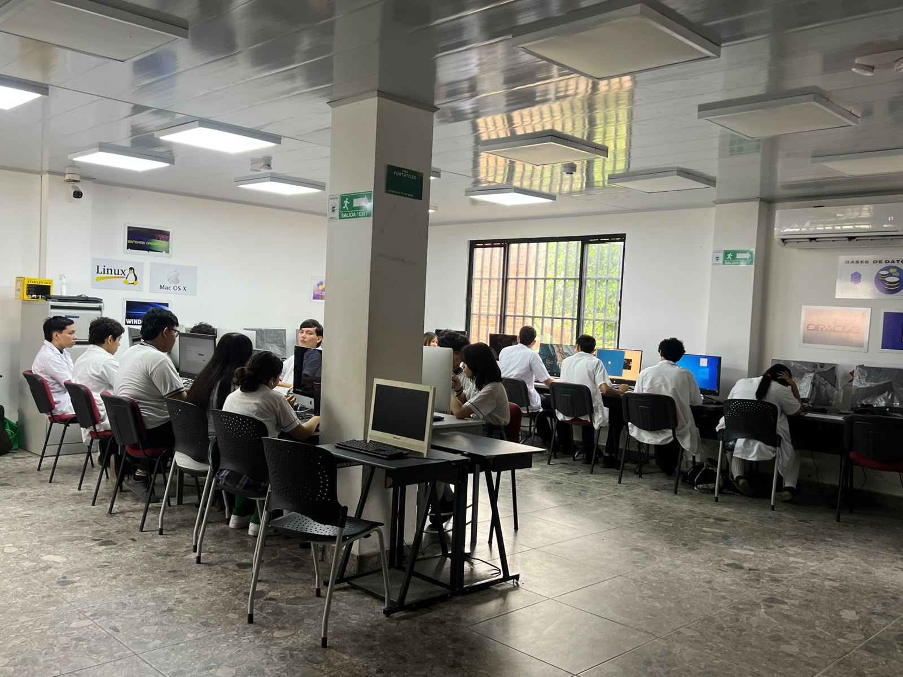

El Laboratorio de Programación de Software es un espacio de formación técnica y tecnológica orientado al desarrollo de competencias para la creación de soluciones informáticas que respondan a las necesidades del sector productivo, la sociedad y el entorno. En un contexto caracterizado por la transformación digital y el crecimiento de la industria del software, esta especialidad brinda a los estudiantes las herramientas necesarias para comprender, analizar y resolver problemas mediante el uso de tecnologías de la información.
Aborda las diferentes etapas del ciclo de vida del software, desde el análisis y levantamiento de requerimientos hasta el diseño, desarrollo, implementación, pruebas y mantenimiento de aplicaciones.
Promueve el aprendizaje basado en proyectos y la resolución de problemas reales, permitiendo integrar conocimientos y fortalecer el pensamiento lógico, algorítmico y computacional.
El egresado cuenta con bases para participar en el desarrollo de software y continuar su trayectoria académica en ingeniería de sistemas, software, electrónica, mecatrónica y áreas afines.
Los estudiantes fortalecen sus conocimientos y habilidades en programación orientada a objetos, estructuras de datos, bases de datos, redes de computadores, arquitectura de sistemas e ingeniería de software. Asimismo, utilizan diferentes lenguajes, herramientas y plataformas para desarrollar aplicaciones destinadas a equipos de cómputo, dispositivos móviles y entornos web.
Se incorporan además competencias laborales, ciudadanas, comunicativas y éticas orientadas al uso responsable, seguro y crítico de la tecnología, facilitando el trabajo en equipo en contextos profesionales.